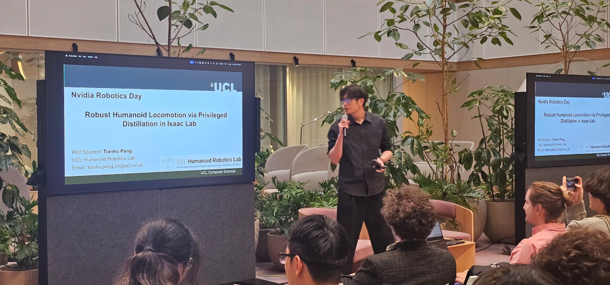
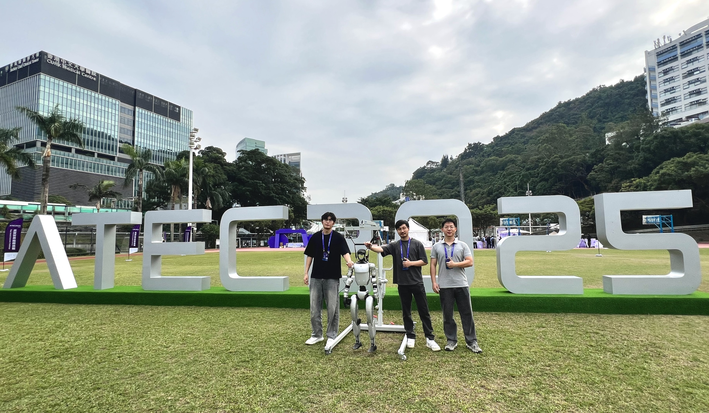

Tianhu Peng
Ph.D. Researcher in Robotics @ UCL
Focusing on legged robots, reinforcement learning, and sim-to-real transfer. Aspiring entrepreneur with strong industry background at Tencent Robotics X.

Focusing on legged robots, reinforcement learning, and sim-to-real transfer. Aspiring entrepreneur with strong industry background at Tencent Robotics X.
Specializing in Legged Robotics, Reinforcement Learning, and advancing the state-of-the-art in autonomous locomotion and expressive motion generation.
Deepened expertise in biomechanics, advanced control systems, and human-robot interaction.
Built a strong foundational knowledge in mechanical design, electronics, and foundational robotics engineering.
Gained rich industry experience working directly on advanced legged robot platforms. Contributed to cutting-edge research translating theoretical robotics into robust, real-world deployment.

Presented advanced distillation training methodologies inside **Isaac Lab** for scaling bipedal and humanoid locomotion across complex terrains.

Live field stress-testing on full-scale humanoid kinetics. Solving high-DOF compliance & torque constraints pushes the absolute boundary of legged stability, unlike simpler multi-pedal systems.

Featured in [UCL Engineering News] — our lab introduced 'Easton', a full-scale humanoid robot at UCL East, enabling frontier research in embodied AI: how intelligent systems move, interact, and learn in real-world environments.

Produced an official Valentine's Day promotional film for UCL Computer Science using our humanoid robot — blending embodied AI with creative storytelling to showcase the personality behind cutting-edge robotics research.
Whether you have a question about my research, are interested in collaboration, or want to discuss startup opportunities.